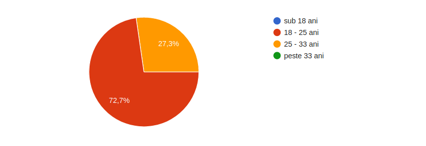
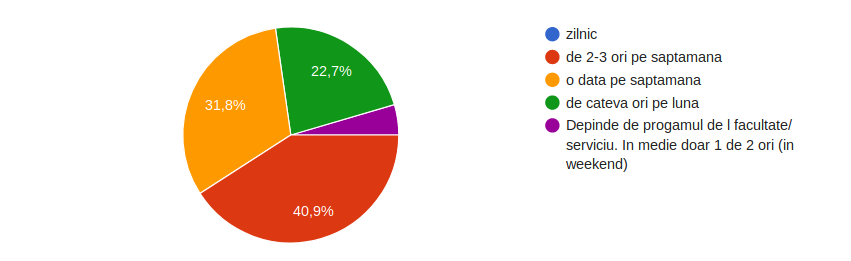
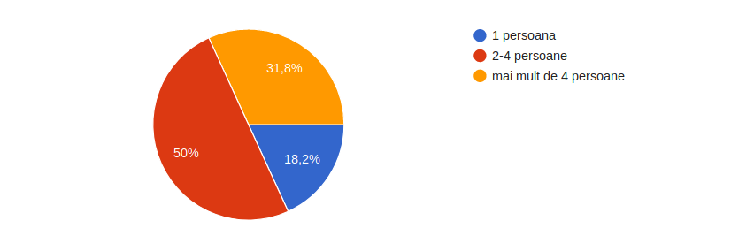
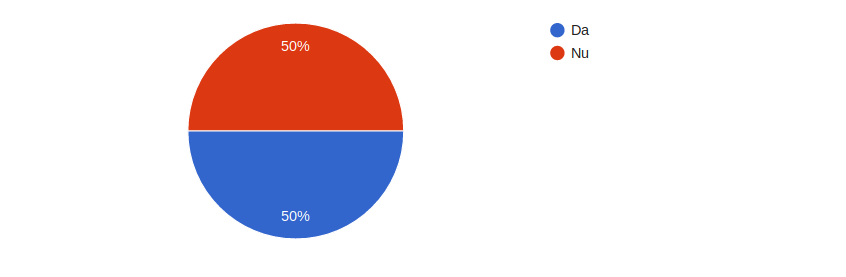
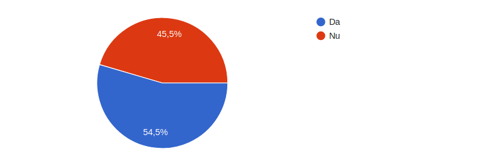

Milestone 2
Identificarea problemei
Problema pe care vrem sa o rezolvam am intalnit-o de fiecare data cand incercam sa organizam o iesire in oras cu un grup de prieteni - mereu
ne blocam la alegerea unui loc si a unei ore potrivite pentru fiecare persoana din grup. Cautand idei de proiecte am observat ca si alte persoane
aveau probleme asemanatoare cu cea descoperita de noi:
-
http://www.ideamachine.io/comments/index/609373038770016257
-
http://www.ideamachine.io/comments/index/593842826661613568
-
https://blog.sagipl.com/mobile-app-ideas/ - idea 62
Solutia propusa
Pentru solutionarea problemei am gasit o idee foarte simpla: o aplicatie in care fiecare membru al unui grup salveaza in fiecare zi ora si zona in care
ar putea sa se intalneasca. Pe baza acestor informatii se vor genera locuri de intalnire in fuctie de zona si se vor stabili atat locul, cat si ora in functie de numarul de persoane.
Descrierea procesului prin care am descoperit cerintele utilizatorilor
Fiind un grup de tinerii cu varste apropiate ne-am dat seama ca intampinam aceeleasi dificultati legate de timp si locatie
atunci cand vrem sa stabilim o intalnire. Acesta a fost unul dintre motivele care ne-a determinat sa ne extindem cercul si sa-i intrebam
si pe prietenii nostri ce parere au.
Pentru a avea o imagine cat mai buna asupra raspunsurior primite, am distribuit un
formular online care poate fi accesat la link-ul urmator:
Formular online - MeetUp
In continuare vom prezenta datele pe care le-am obtinut in urma aplicarii chestionarului, precum si un
scurt rezumat al acestora:
- Ce varsta aveti?
Intrucat chestionarul a fost distribuit prietenilor si cunostintelor noastre, majoritatea persoanelor
care au completat chestionarul sunt cu varste cuprinse intre 18 si 25 de ani. Intr-un procent de aproximativ
30% au raspuns si persoane cu varsta intre 25 si 33 de ani.

- Cat de des iesiti in oras?
Atunci cand au fost intrebati cat de des ies in oras, raspunsurilor au fost mult mai diversificate. Ne bucuram sa
vedem ca aproximativ 40% dintre cei care au raspuns ies in oras de 2-3 pe saptamana fapt ce implica alegerea locatiei si
a intervalului de timp potrivite.

- Cat de mare este grupul de prieteni alaturi de care iesiti in oras?
Cu cat grupul de prieteni este mai mare cu atat pot fi intampinate mai multe probleme in alegerea locatiei
si a intervalului de timp care sa corespunda cu programul fiecaruia. Intr-un procent de 50% se observa ca
cei care au raspuns aleg sa iasa in grupuri de 2-4 persoane, iar pe locul doi in preferinte sunt grupurile mai
mari de 4 persoane cu un procent de aproximativ 30%.

- Intampinati dificultati in stabilirea locatiei la care sa va intalniti?
Atunci cand au fost intrebati daca intampina dificultati in a alege locatia, raspunsurile primite au fost in proportii
egale atat afirmative cat si negative. Aplicatia noastra va veni in ajutorul celor care nu reusesc sa se decida care
este locatie potrivita, astfel procesul fiind unul mult mai placut si usor.

- Intampinati dificultati in stabilirea unui interval orar in care sa va intalniti?
Timpul este o resursa foarte importanta si trebuie sa stim cum sa il gestionam cat mai bine.
In functie de orasul in care locuiesti, timpul pe care il aloci pentru a ajunge la o destinatie
variaza foarte mult. Intrucat raspunsurile primite sunt anonime nu avem date exacte referitoare la
orasul in care locuiesc cei care au raspuns. Raportandu-ne la Bucuresti si la variantele pe care le avem pentru a ne deplasa, trebuie sa luam in calcul
si de cat timp avem nevoie pentru a merge spre locatia propusa.
Raspunsurile primite difera in proportie de aproximativ 5%, un factor important fiind orasul in care are loc intalnirea.

Validarea ideii
In urma analizei efectuate asupra raspunsurilor primite la formular nostru, consideram ca ideea
este cel putin un punct de start foarte bun pentru o aplicatie ce are ca scop eliminarea principalei probleme
atunci cand un grup de prieteni vor sa isi petreaca timpul impreuna in oras, decizia asupra locului si timpului.
Desi exista aplicatii ce ofera functionalitati de meetup pentru un grup de useri, acestea se bazeaza in mare
parte pe evenimete create in interiorul aplicatiei sau locale partenere cu dezvoltatorii aplicatiei.
Astfel principal avantaj al produsului nostru este modul in care ne bazam pe orarul si locatia fiecarui
utilizator in parte pentru a oferi mai multe solutii care sa satisfaca majoritatea restrictiilor impuse de un grup de prieteni.